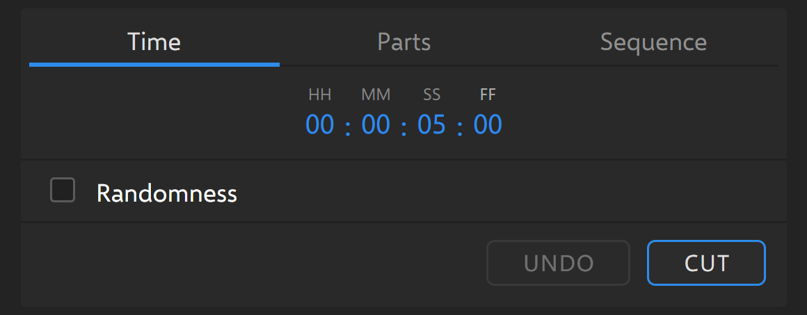
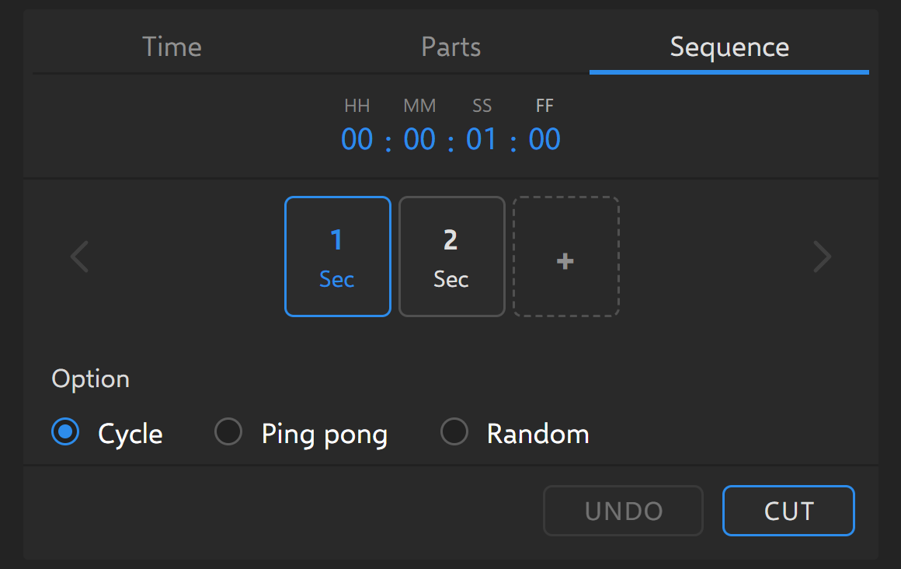
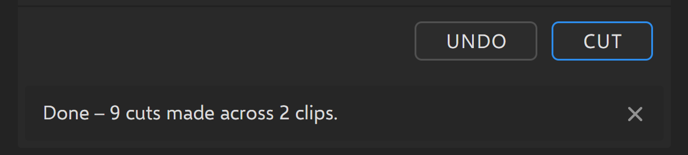
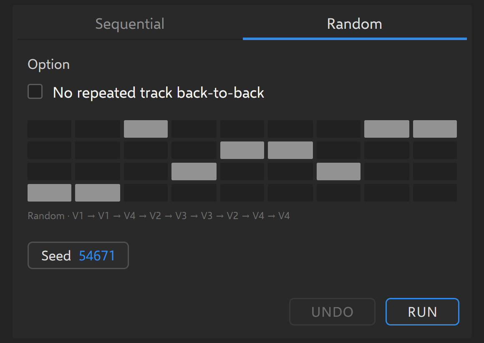
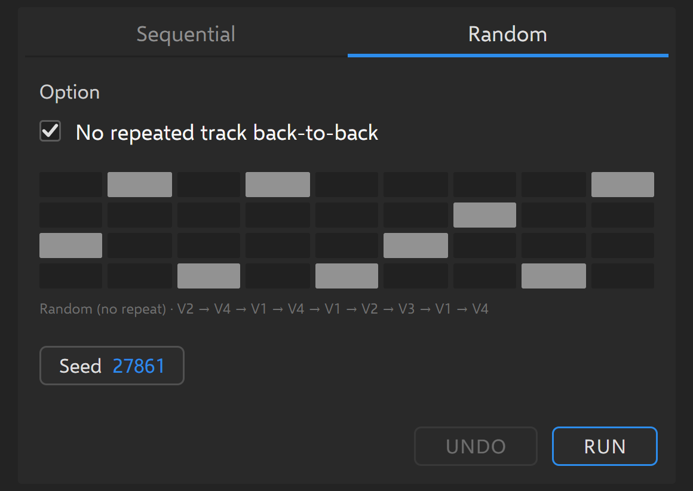
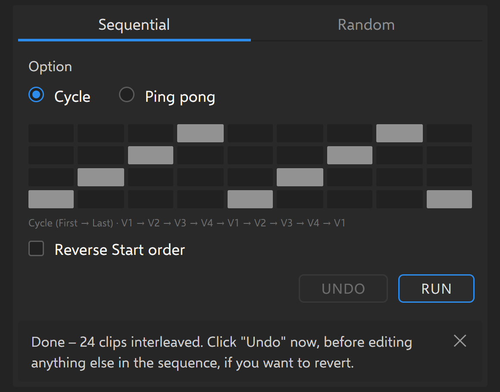

Quick start
The typical workflow is to cut the clips first, then interleave them. Each half also works on its own.
- Open a sequenceThe panel watches the active sequence by itself. Until there is one, it shows a message at the top and CUT and RUN are greyed out.
- Copy History stepsOnce, set the footer field to the same number Premiere uses in its History settings (32 by default). Why?
- Select clips and hit CUTSelect clips in the timeline, set the piece length at the top and click Cut.
- Pick an order and hit RUNAt the bottom choose Sequential or Random, check the grid and click Run. Each half has its own Undo.
Cutter: cutting clips
Cutter works only on the clips selected in the timeline. Each clip is cut starting from its own beginning. Three tabs at the top decide how the piece length is worked out. Numbers work like in Premiere: drag them sideways with the mouse.

Time: cut at a fixed interval
Enter the length of one piece as a timecode. The default 00:00:05:00 cuts every selected clip every five seconds. The last piece is shorter if the clip doesn't divide evenly.
- Time Parts Sequence
- Switches between the three cutting modes. The active tab is underlined in blue.
- HH : MM : SS : FF
- Hours, minutes, seconds and frames. Frames follow the frame rate of the active sequence.
- Mouse drag
- Grab a number and drag right (more) or left (less). The value changes in steps, just like numbers in Premiere.
- Click
- Clicking a number without dragging opens it for typing. Enter confirms the value.
- Wheel, arrow keys
- Use the mouse wheel over a number, or ↑ ↓ inside the field, to change the value one step at a time.
- Overflow
- Values roll over by themselves: 30 frames in a 30 fps sequence becomes 1 second.

Parts: equal pieces
Instead of a time, you enter a number of parts. Every selected clip is split into that many pieces of equal length, however long it is.
- Number of parts
- A number from 1 to 100. Drag it sideways, click and type, or use the wheel and arrow keys. A value of 01 leaves the clip uncut.
- Randomness
- Works the same as on the Time tab, see the next section.


Randomness: pieces of uneven length
The checkbox sits below the value field on both the Time and Parts tabs. When it is checked, each piece gets a random length around the value you set, so the edit doesn't look mechanical.
- ☑ Randomness
- Turns randomness on and reveals the other options. Unchecked means every piece is exactly the same.
- Amount 1–99 %
- The slider sets how much a piece's length may vary. At 5 s and 10 %, pieces come out roughly between 4.5 and 5.5 s. The default is 10 %.
- ◉ Synced
- Clips that sit exactly on top of each other (same start and end, such as video with its linked audio, or the same shots on several tracks) get the same cuts.
- ◉ Independent
- Each video clip gets its own random cuts. Its audio is cut along with it, so picture and sound of every clip stay together. Audio with no video above it gets cuts of its own.
- Icons above the options
- Show the idea: straight rows for Synced, scattered rows for Independent.

Sequence: your own rhythm of lengths
You build a pattern from several lengths, for example 1 s and 2 s. Cutter then cuts the clip by repeating that pattern, giving the edit a rhythm.
- Tiles
- The individual lengths in the pattern. Click a tile to select it: it gets a blue outline and a blue number. Whatever you set in the timecode field above then applies to it.
- Timecode field
- Works just like on the Time tab. The length must be greater than 00:00:00:00.
- +
- Adds a tile at the end. It copies the length of the last tile and is selected right away.
- ✕
- Removes a tile. The pattern needs at least two, so the cross is hidden when only two are left.
- ‹ ›
- Scroll the row of tiles when they don't fit in the panel.
- Option
- The order in which the lengths alternate: Cycle, Ping pong or Random (see below).
Cycle
The pattern repeats the same way every time: 1, 2, 3, 1, 2, 3…
Ping pong
Back and forth: 1, 2, 3, 2, 1, 2, 3… The end length is not repeated twice in a row at the turn.
Random
The whole pattern is reshuffled after every pass. Each length appears exactly once per round, just in a different order each time.



CUT and UNDO
- Cut
- Cuts the selected clips according to the active tab. It's greyed out while cutting.
- Progress bar
- On bigger jobs a blue bar with a percentage appears, with text like “Splitting… 14 of 31 cut groups”. A cut group is a set of stacked clips cut in one go.
- Message
- When it's done, the result appears, for example “Done – 9 cuts made across 2 clips.” Errors show up in the same place. The ✕ closes the message.
- Undo
- Reverts the last CUT through Premiere's history, as many steps as the CUT recorded. It stays grey until you've cut something. If you undo the cuts yourself with Ctrl+Z (Mac: Cmd+Z) or the sequence changes, the panel's UNDO turns off so it can't revert anything else.

History steps: how much UNDO can revert
Cutter's UNDO reverts cuts through Premiere's history. Premiere only remembers a limited number of steps (History States, 32 by default), and the panel can't read that setting itself. That's why you copy it into the footer.
- History steps 32
- Enter the same number Premiere uses under History panel → menu → Settings → History States. The panel remembers it.
- A long CUT
- If a CUT would need more steps than fit in the history, nothing happens and the panel shows a warning. Clicking CUT again runs it anyway, but without UNDO in the panel.
- What counts
- Every cut is one step. Temporarily locking tracks while cutting adds steps too (see Tips).
Weaver: interleaving tracks
Weaver takes the clips from all video tracks in the sequence (the selection doesn't matter) and lines them up on the timeline so the tracks take turns. Every clip stays on its own track and only moves in time. It starts where the earliest clip was, and the pieces butt up against each other with no gaps.
Three tracks cut by Cutter sit on top of each other. After RUN they alternate V1, V2, V3, V1… and play one after another. Linked audio moves along with the picture.

Sequential: regular alternation
The tracks alternate in a fixed order. The grid shows what the order will look like: each row is one video track (highest at the top, V1 at the bottom), and a grey block is a piece. The nine columns are just a sample.
- Sequential Random
- The main order switch: regular or random.
- ◉ Cycle
- Round and round in one direction: V1, V2, V3, V4, V1, V2…
- ◉ Ping pong
- Back and forth: V1, V2, V3, V4, V3, V2, V1, V2… The end track is not repeated at the turn.
- ☑ Reverse Start order
- Flips the direction: starts from the highest track (V4 → V1) instead of V1.
- Caption under the grid
- Spells out the chosen order, for example “Cycle (First → Last) · V1 → V2 → V3…”.

Ping pong: V1, V2, V3, V4, V3, V2, V1…

Cycle with a reversed start: V4, V3, V2, V1, V4…

Random: random alternation
Pieces are picked from the tracks at random. The grid and RUN use the same random number (the seed), so the timeline gets exactly the order you see in the preview.
- ☑ No repeated track back-to-back
- Two pieces from the same track never play right after each other. Available only when the sequence has more than two video tracks.
- Seed 54671
- Each click rolls a new order and redraws the grid. Keep clicking until you like the preview, then hit RUN.


RUN and UNDO
- Run
- Rearranges the clips on the timeline according to your settings. It works directly on the sequence and makes no backup. It needs at least two video tracks with clips; otherwise it just shows a message.
- Message
- “Done – 24 clips interleaved…” If some audio couldn't be matched to its picture (picture and sound cut at different points), it stays put and the panel lists it below the message.
- Undo
- Moves every shifted clip back to its original place in one click. It works only for the last RUN, and only until you close the panel. If something doesn't go back, the panel lists it and UNDO stays active so you can click it again.
Tips and limits

- No sequence
- The top shows “No active sequence is open in the project.” and CUT and RUN turn grey. As soon as you open a sequence, the panel wakes up by itself.
- Another sequence
- The panel tracks which sequence is active. If you switch to a sequence with a different frame rate, the interval keeps the same length in time.
- Light and dark theme
- The panel follows Premiere's interface brightness (Preferences → Appearance) and adapts as soon as you change it.
- Locked tracks
- Weaver skips tracks locked with the lock icon in the track header: their clips stay put and aren't counted in the grid. Handy for music or titles.
- Linked picture and sound
- While cutting, Cutter briefly locks the other tracks so a video and its audio are cut in one go and stay linked. It then restores the locks. If your Premiere version can't do this from a script, it cuts track by track and the picture and sound pieces won't be linked (the panel tells you).
- Clip edges
- Cutter never cuts closer than one frame to the start or end of a clip. A clip shorter than one piece is skipped and left unchanged.
- Audio in Weaver
- Audio is paired by track number (A1 with V1, A2 with V2…) piece by piece, but only when they line up in time. Otherwise Weaver looks for audio with the same start and length. Whatever finds no match stays put and the panel lists it.
- Help
- The link in the panel footer. It doesn't lead anywhere yet in this version.
Panel messages
What the most common messages mean and what to do about them.
| Message | What to do |
|---|---|
| No active sequence is open in the project. | Open a sequence in Premiere. Until then, CUT and RUN are greyed out. |
| No clips selected in the timeline… | Select the clips you want Cutter to cut in the timeline and hit CUT again. |
| Enter an interval greater than 00:00:00:00. | The Time tab is set to zero. Enter at least one frame. |
| A segment needs to be longer than 00:00:00:00. | A tile in Sequence can't have zero length. |
| Nothing to cut — selection produced no cut points. | The selected clips are shorter than one piece. Shorten it or use Parts. |
| This Run needs N history steps, but Premiere keeps only M… | The CUT doesn't fit in Premiere's history. Clicking CUT again runs it without UNDO. Otherwise select fewer clips or raise History States (see History steps). |
| …Undo isn't available for this Run… use File > Revert if needed. | The CUT ran, but the panel can't revert it. Only File → Revert can. |
| Video and audio pieces are not linked… | The cuts are done, but the picture and sound pieces aren't linked. Link them by hand in Premiere if you need to. |
| Undo reverted only part of the Run… | Revert the rest with Ctrl+Z (Mac: Cmd+Z) or File → Revert. |
| No video tracks identified. Open a sequence with at least 2 video tracks. | Weaver needs at least two unlocked video tracks that contain clips. |
| Done, but some audio is no longer in sync with its video… | Some audio found no match and stayed put. Use UNDO, then cut picture and sound together (Synced). |
| Done, but N move(s) failed… | Some clips couldn't be moved. The list is below the buttons; consider UNDO. |
| Undo only partially completed… | Click UNDO again, or finish the rest with Ctrl+Z. |